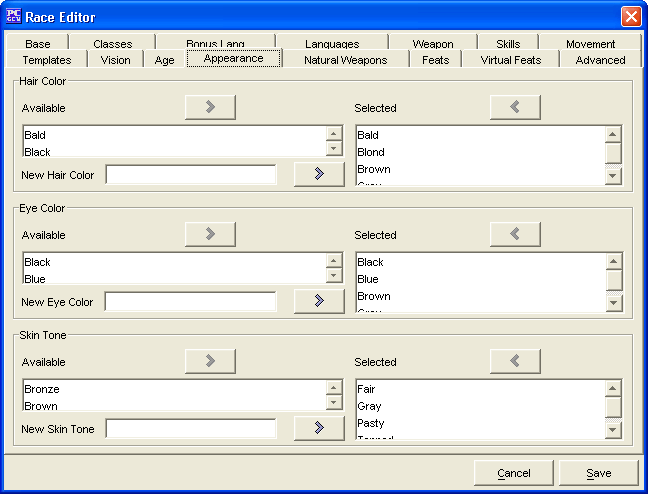

Race Editor: Appearance Tab

The Appearance Tab is used to add the available Hair, Eye & Skin
hues for the Race being created.
The two Hair Colour windows, Available and Selected are
used to create a list of colours which are available for the Race.
- The Add and Remove buttons will move the highlighted colour
between the 2 windows, as will double clicking on a name.
- New Colours can be added by manually typing them and then clicking the Add
button
The two Eye Colour windows, Available and Selected are
used to create a list of colours which are available for the Race.
- The Add and Remove buttons will move the highlighted colour
between the 2 windows, as will double clicking on a name.
- New Colours can be added by manually typing them and then clicking the Add
button
The two Skin Tone windows, Available and Selected are used
to create a list of colours which are available for the Race.
- The Add and Remove buttons will move the highlighted colour
between the 2 windows, as will double clicking on a name.
- New Colours can be added by manually typing them and then clicking the Add
button
The Cancel and Save buttons, which appear on every tab, are used
to either cancel the Race creation or save it to the customRaces.lst file.